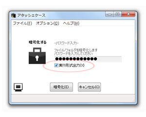
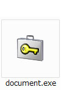
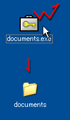

暗号化の際に、以下の「実行形式出力」のボックスにチェックを入れ、暗号化を行うと、実行形式（*.exe）で出力することができます。
なお、F12キーを押すことでも、チェックボックスをON/OFFすることができます。また、
Ctrl + Enterキーでも実行形式出力で暗号化を行うことができます。

↓実行ファイル（*.exe）で出力されます。

アイコンも通常の暗号化ファイル（*.atc）とは異なるので、すぐにわかると思います。このファイルは、「アタッシェケース」がインストールされていないパソコンでも復号する（戻す）ことができます。アタッシェケースを持っていない方へ大切なファイルを渡すなどするときに便利な機能でしょう。ただし、いわずもがなですが、復号する際にはパスワードが必要です（^^; 相手が知っているか、伝えておく必要があります。

EXEファイルを実行することで、暗号化されたファイル/フォルダが復号化されます（戻ります）。
自己実行形式出力での注意点
自己実行形式出力の際に、注意する点がいくつかあります。
Created with the Personal Edition of HelpNDoc: Full featured Help generator